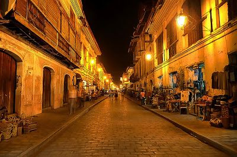

Bangui Windfarm is a wind farm in Ilocos Norte, Philippines. The windfarm uses 20 units of 70-meter (230 ft) high Vestas V82 1.65 MW win turbines, arranged in a single row stretching along a 9-kilometer shoreline of Bangui Bay.
Bangui Windmill is visited by thousands of tourists particulary during summer season. There are no cost to pay to get a beautiful shot beneath the windmill.
One of the oldest towns in the Philippines, Vigan is a Spanish Colonial fairy tale of dark-wood mansions, cobblestones street and clattering kalesa (horse-drawn carriages). In fact, it is the finest surviving example of a Spanish Colonial town in Asia and a Unesco World Heritage.
This place is also know as Mestizo District, where the streets are lined with Spanish era ancestral houses.